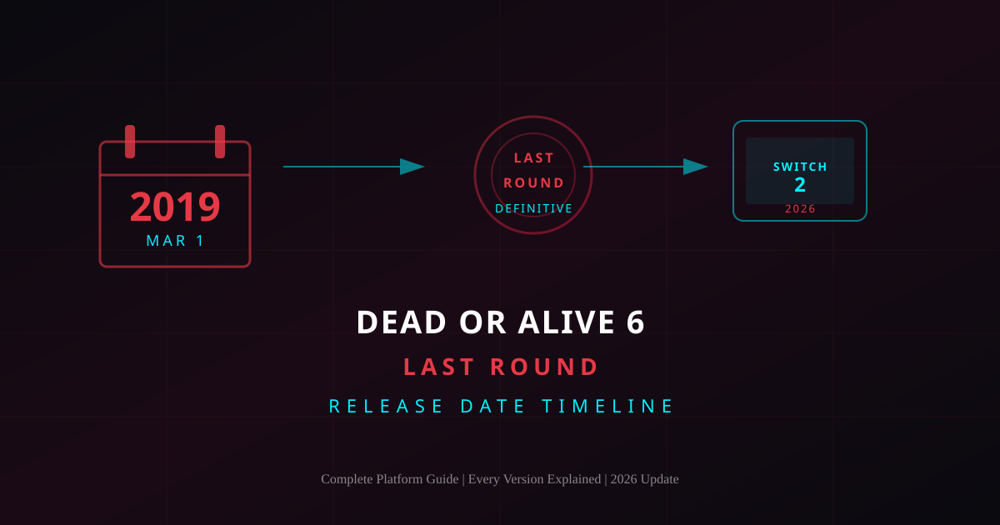
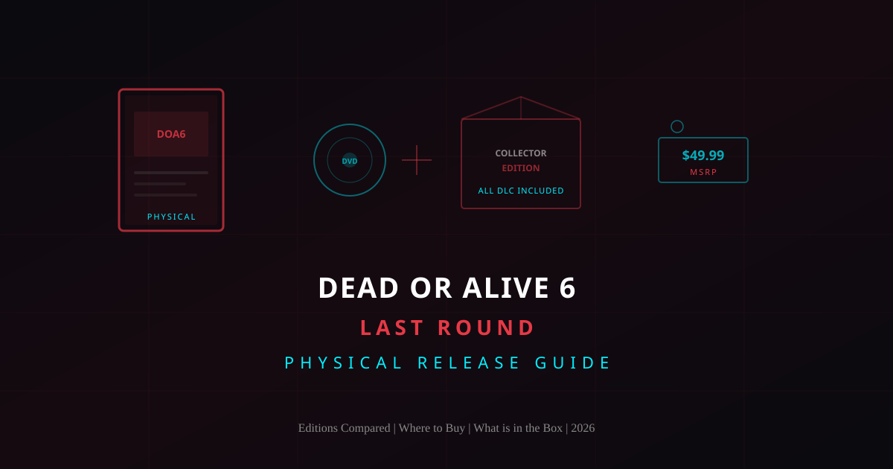
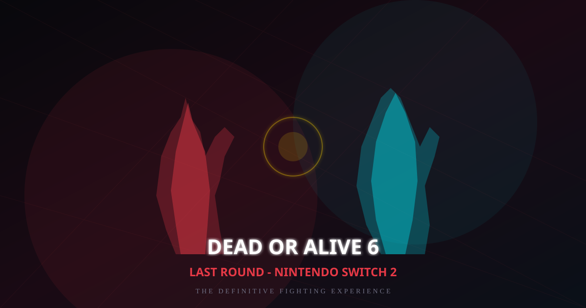

Dead or Alive 6 Last Round All Stages: Complete Interactive Stage Guide with Danger Zones
Every DOA6 Last Round stage broken down ? danger zones, transitions, wall combos, and competitive stage selection strategies to turn the environment into your weapon.
DOA6 Last Round Frame Data: Startup, Advantage & Punishment Explained
Master frame data to punish every unsafe move, maintain pressure with advantage, and climb the ranked ladder faster.
Dead or Alive 6 Last Round System Requirements: PC Minimum, Recommended, and Performance Guide
Practical PC requirements for DOA6 Last Round ? minimum and recommended specs, SSD notes, and the best settings for stable 60fps play.

Dead or Alive 6 Tier List: DOA6 Last Round Character Rankings (2026)
Complete tier list for DOA6 Last Round — every character ranked with playstyle breakdowns, beginner picks, and full guide links.
DOA6 Last Round Costumes: How to Unlock Every Costume for Every Character
Complete costumes unlock guide — Story Mode, DOA Quest, in-game shop (PP/OP), DLC packs, farming tips, and rare costume breakdowns for the full roster.
Dead or Alive 6 Last Round Beginner Guide: From First Fight to Competitive Play
Complete beginner strategy guide — the Triangle System, character selection, essential combos, frame data basics, and a proven daily practice routine for climbing the ranked ladder.

Dead or Alive 6 Last Round Price: Every Edition, Every Platform & How to Get the Best Deal
Complete pricing guide for DOA6 Last Round 鈥?standard, deluxe, and physical editions with DLC costs, sale schedules, and proven strategies to get the best price.

Dead or Alive 6 Last Round Platforms: PS4, PS5, Xbox, PC & Switch 2
Complete breakdown of every DOA6 Last Round platform 鈥?performance specs, features, online multiplayer, and expert buying advice to help you choose the right version.

Dead or Alive 6 Last Round Release Date: Complete Timeline & Platform Guide
The complete release date timeline for DOA6 Last Round from the original 2019 launch through every platform, including the Nintendo Switch 2 version in 2026.

Dead or Alive 6 Last Round Physical Release: Editions, Price & Where to Buy
Every physical edition compared 鈥?Standard, Deluxe, and Collector's. Box contents, pricing, retailer availability, and whether the physical copy is worth buying.
Dead or Alive 6 Last Round Wiki: Characters, Mechanics, Stages & Complete Guide
The complete DOA6 Last Round knowledge base 鈥?character database, Triangle System, Critical mechanics, stage guide, frame data, combos, and competitive strategies.

Dead or Alive 6 Last Round on Nintendo Switch 2: The Complete Guide
Everything you need to know about DOA6 Last Round on Switch 2 - full roster, gameplay mechanics, performance details, online features, and essential tips for new players.